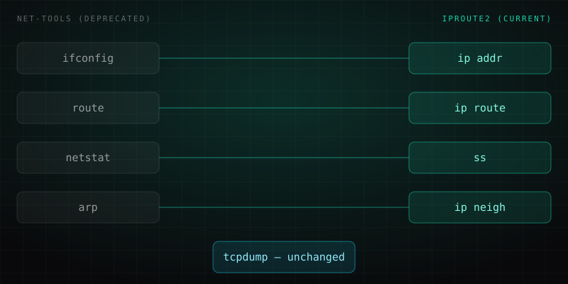

Network command glossary: ip, ss, netstat, tcpdump, which one, when.
Half the networking commands in every old tutorial are deprecated, and people use them anyway because they still technically work. Here's what to actually reach for today.
Open almost any networking tutorial from the last fifteen years and you'll find ifconfig and netstat taught as the standard way to look at a Linux box's network state. Both are part of the old net-tools package, and both have been formally deprecated for years – net-tools has had no active upstream development, and most current distributions (Debian, Ubuntu, Fedora, Arch, RHEL) either don't install it by default anymore or keep it around only as a legacy compatibility layer. The commands that actually replaced them – ip and ss, both part of the iproute2 suite – are what's actually pre-installed and current, yet they're taught far less often, so plenty of otherwise-competent admins have never typed them.
None of this is really about "old" versus "new" for its own sake. It's about what's maintained, what reads kernel state more directly and faster, and what will still be there next year. This glossary is organized by the task you're trying to do, not alphabetically, so you can jump straight to the thing you need.
See your interfaces and addresses: ip addr (not ifconfig)
To list every network interface and the addresses assigned to it, run:
$ ip addr show
1: lo: <LOOPBACK,UP,LOWER_UP> mtu 65536 qdisc noqueue state UNKNOWN
link/loopback 00:00:00:00:00:00 brd 00:00:00:00:00:00
inet 127.0.0.1/8 scope host lo
valid_lft forever preferred_lft forever
2: eth0: <BROADCAST,MULTICAST,UP,LOWER_UP> mtu 1500 qdisc fq_codel state UP
link/ether 02:42:ac:11:00:02 brd ff:ff:ff:ff:ff:ff
inet 172.20.0.5/24 brd 172.20.0.255 scope global eth0
valid_lft forever preferred_lft forever
inet6 fe80::42:acff:fe11:2/64 scope link
valid_lft forever preferred_lft foreverThe short form ip a does exactly the same thing – iproute2 tools accept shortened subcommands. Reading the output: state UP means the interface is administratively up and has carrier; inet 172.20.0.5/24 is the IPv4 address and its subnet mask in CIDR notation; and scope global means the address is routable outside the local machine, as opposed to scope link (like the IPv6 line), which is only valid on the local network segment.
ifconfig still works on plenty of systems because distributions ship it as an optional compatibility package, and it will show similar information in a slightly different layout. But it is not being maintained upstream, it cannot see newer interface types cleanly, and there is no guarantee it stays installed on the next server you touch. If you're learning one tool for this task, learn ip addr.
See and change routes: ip route (not route)
To see how the machine decides where to send traffic:
$ ip route show
default via 172.20.0.1 dev eth0 proto dhcp metric 100
172.20.0.0/24 dev eth0 proto kernel scope link src 172.20.0.5 metric 100
169.254.0.0/16 dev eth0 scope link metric 1000The line to actually read first is the default route: it says any traffic that doesn't match a more specific route below it gets sent via 172.20.0.1 – the default gateway – out through eth0. The second line describes the directly connected local subnet: anything in 172.20.0.0/24 is reachable directly on that interface, no gateway needed. If a host can't reach the internet but can reach other machines on its own subnet, the default route is the first thing to check. The old equivalent, route -n, is the same net-tools package as ifconfig and carries the same caveat.
See active connections and listening ports: ss (not netstat)
To see what's listening and what's connected:
$ ss -tulpn
Netid State Recv-Q Send-Q Local Address:Port Peer Address:Port Process
tcp LISTEN 0 128 0.0.0.0:22 0.0.0.0:* users:(("sshd",pid=712,fd=3))
tcp LISTEN 0 511 127.0.0.1:5432 0.0.0.0:* users:(("postgres",pid=1188,fd=6))
tcp ESTAB 0 0 172.20.0.5:22 172.20.0.1:51422 users:(("sshd",pid=2043,fd=4))
udp UNCONN 0 0 0.0.0.0:68 0.0.0.0:* users:(("dhclient",pid=590,fd=5))The flags do specific work: -t shows TCP sockets, -u shows UDP, -l restricts to listening sockets, -p resolves the owning process, and -n skips DNS/service-name lookups so it returns instantly instead of hanging on reverse lookups. In the columns: State tells you whether a socket is passively waiting (LISTEN) or part of a live conversation (ESTAB); Local Address:Port is what's bound on this machine – note that 127.0.0.1:5432 only accepts local connections, while 0.0.0.0:22 accepts from anywhere; Peer Address:Port is the remote side of an established connection; and Process names exactly which program owns the socket.
netstat still exists on many systems and its output looks superficially similar, but ss reads socket information directly from the kernel rather than parsing /proc the way netstat does, which is why it's dramatically faster on a machine with thousands of open connections. It is the maintained tool going forward, and it's what you'll find preinstalled on a fresh container or VM when netstat is not.
Capture and inspect traffic: tcpdump
This is the one command in this glossary that has no deprecated equivalent to worry about – tcpdump has been the standard packet-capture tool for decades and remains it. Where ip and ss tell you about configuration and socket state, tcpdump shows you the actual packets crossing the wire. A common, useful filter:
$ sudo tcpdump -i eth0 port 443 -n
tcpdump: verbose output suppressed, use -v for full protocol decode
listening on eth0, link-type EN10MB (Ethernet), capture size 262144 bytes
14:32:07.184213 IP 172.20.0.5.51422 > 93.184.216.34.443: Flags [S], seq 812301, win 64240
14:32:07.201880 IP 93.184.216.34.443 > 172.20.0.5.51422: Flags [S.], seq 40213, ack 812302, win 65160
14:32:07.202015 IP 172.20.0.5.51422 > 93.184.216.34.443: Flags [.], ack 40214, win 502This filters to traffic on port 443 (HTTPS) on interface eth0, and -n disables name resolution so it prints raw IPs instead of hanging on DNS. The three lines above are a classic TCP three-way handshake: [S] is the SYN, [S.] is the SYN-ACK, and [.] is the final ACK – useful for confirming whether a connection is even completing before you dig further.
For anything you'll want to analyze at length, capture to a file instead of reading the live scroll:
$ sudo tcpdump -i eth0 -w capture.pcapThe resulting .pcap file opens in Wireshark for the graphical, follow-the-stream analysis that a terminal scroll makes tedious. For a full breakdown of when to reach for the command line versus the GUI, see Wireshark vs tcpdump.
Quick reference table
| Task | Modern command | Deprecated equivalent |
|---|---|---|
| View interfaces | ip addr | ifconfig |
| View routes | ip route | route |
| View connections / listening ports | ss | netstat |
| Capture traffic | tcpdump | no replacement needed |
| View ARP table | ip neigh | arp |
None of the five commands on the left are obscure or specialist tooling: they are the ones actually installed by default on the distributions most people run today. Relearning them is worth the ten minutes it takes even if your fingers already know ifconfig and netstat by muscle memory, because the day you sit down at a minimal container image or a hardened server and neither is there, you'll want the current tools to already be second nature rather than something you're looking up mid-task.

Frequently asked questions
Is ifconfig deprecated?
ip addr.
What replaced netstat?
ss, part of the iproute2 suite, replaced netstat. It reads socket information directly from the kernel rather than parsing /proc the way netstat does, which makes it dramatically faster on a machine with thousands of open connections.
How do you capture packets on a specific port with tcpdump?
sudo tcpdump -i eth0 port 443 -n, which captures traffic on port 443 on interface eth0 while disabling DNS name resolution so it prints raw IPs instead of hanging on lookups.
What command shows the ARP table on modern Linux?
ip neigh shows the ARP table today, replacing the deprecated arp command from the old net-tools package.
Daniel A. and Óscar S. run Breachfolio, a small independent site about security and AI. This article was drafted with AI assistance and reviewed by a person before it went live. We write from documentation, vendor sources and published research rather than from original lab benchmarks, and we link a source in the sentence that relies on it. How we work · About us